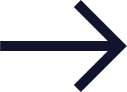
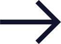

02
TESTIMONIALS
It was a real joy to work with Sarah. She brought our ideas to life, advised on the best way of conveying information and managed the project extremely efficiently so that everything was done on time. I would definitely work with Sarah again.
Rosa, UK fund for women and girls
 
